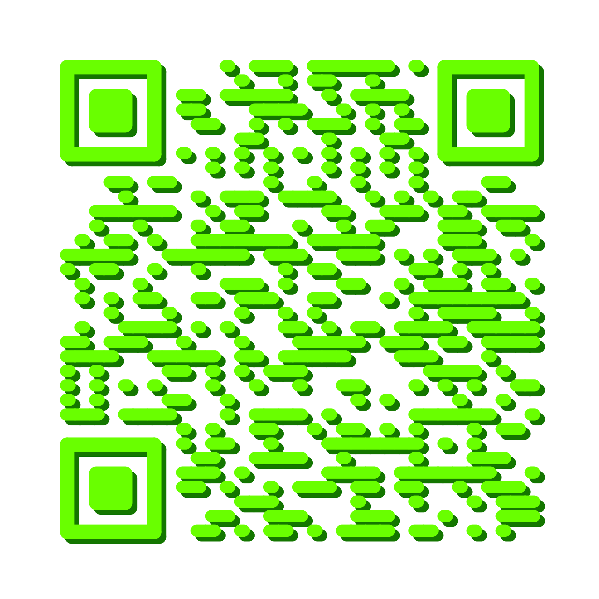

1. ci-poetry
Text you want to expand or collide
2. the sound of software tranquillity 1
Intro
At the end of the work day, a software researcher colleague was tasked with closing all of their open programs, letting the computer wind down. Once the software activity of the day had stopped, a program was run, recording the software activity of the kernel for one second. During this one second the human made no interaction with the computer.
The entire dataset was sonified repeatedly, resulting in the artistic research article the sound of software tranquillity published in Ruukku issue 15. Zooming in further and further, until every microsecond of the trace was audible as rhythm, one second of an idle computer turned into 47 hours of sound. Two days of constant listening, with long stretches of activity separated by seconds to minutes to hours of silence.
We present a few short excerpts from the heart of the computer. The entire recording is available at [DOI: 10.5281/zenodo.4153544].
Software object
Many things happen in the software heart of the computer, the kernel, and there are many ways to measure them. You could trace the communication between applications and the operating system (so called system calls) or measure the temperature of the components fluctuate with power use. This work uses the ftrace tool which, among other things, records function calls inside the Linux kernel. These function calls do not paint a complete picture of all that is happening inside the computer. Yet, since it is virtually impossible to obtain such an exhaustive observation of every aspect of the system at the same time, it serves as a good approximation.
Quote
”Clock signal is the mechanism that establishes the flow-of-time. Without it, the order for all events cannot be arranged and, consequently, no useful tasks can be performed.”
(Xiu, L. (2017), Clock technology: The next frontier p. 28)
3. re|Traces of Search
Text you want to expand or collide
4. the sound of software tranquillity 2
See the sound of software tranquillity 1 above.
5. Browser Chance Music v1
Intro
Browser Chance Music was a space for a radically different relationship between user and software. Evanescent and imperceptible internet activity emanating from a smartphone is revealed through immersive sounds and visuals.
Activating this audiovisual system with your own smartphone gives a sonic and visual presence to the evanescent and imperceptible internet activity that emanates from an object which is often quite personal, but largely unknown. Defamiliarizing the smartphone and revealing the aesthetics of its operation opens the doors to a new relationship with our constant companion.
This project was a collaboration between the re|thread collective and Henrik Frisk, professor of music at KMH, and funded by NAVET.
Software object
Internet activity happens through tiny packets of data sent between IP adresses. Nowadays, most of these packets are encrypted so that the owner and users of a WiFi network cannot read your communication. In this piece, attributes such as who owns the server being communicated with, where the server is located, how much data is being exchanged and how active the connection is are fused into an immersive sonic experience.
6. the sound of software tranquillity 3
See the sound of software tranquillity 1 above.
7. Pellow
Intro
Pellow is an interactive installation that reveals what happens under the hood of a browser when you visit web pages.
Pellow is an interactive installation that reveals what happens under the hood of a browser when you visit web pages. When you browse a page, your browser communicates with many different pages and companies around the world. With Pellow, you see and hear the browser interacting with many other machines all over the world to fetch all of the content. You get a chance to observe where this content comes from and how many organizations and machines around the globe are solicited to deliver the web page that you want. The sonification of these intense software exchanges complements the visual representations, in order to let you fully feel the complexity of a web browser.
Pellow was displayed at Tekniska museet, Stockholm, in October 2020.
8. the sound of software tranquillity 4
See the sound of software tranquillity 1 above.
9. RFC:675:08
Intro
RFC:675:08 was a visual light installation presented in central Stockholm 5-13 December 2020 as part of the Nobel Week Lights festival. Through 7 movements of internet traffic analysis, the internet activity into and out of Stockholm was visualised in real time. This sonification was made just after from the same data stream with the same formal structure, matching the visual piece.
Movements 1 & 2: Origin and destination locations
Movements 3 & 4: Speed and frequency
Movements 5 & 6: Amplitude
Movement 7: Protocols
Software object
The Internet is one of the largest human achievments ever. It is hard to overstate its importance to contemporary society, which grows by the minute, from silly memes to life and death national security. In RFC:675:08 we observe a slice of the internet traffic as a whole, into and out of Stockholm: its high frequency and vast variety of uses.